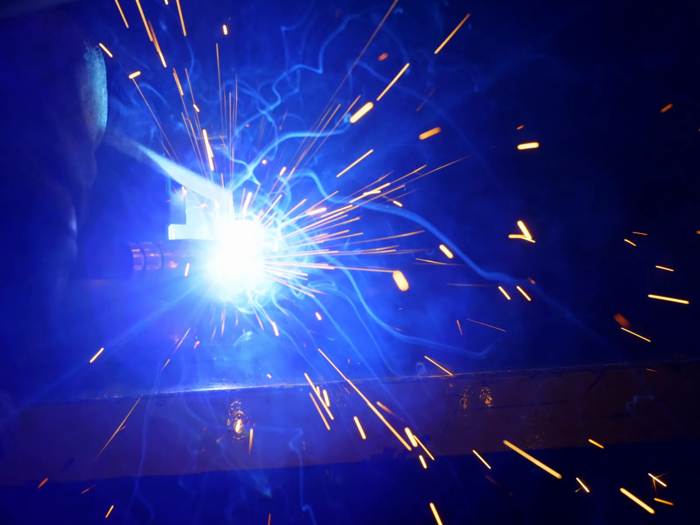
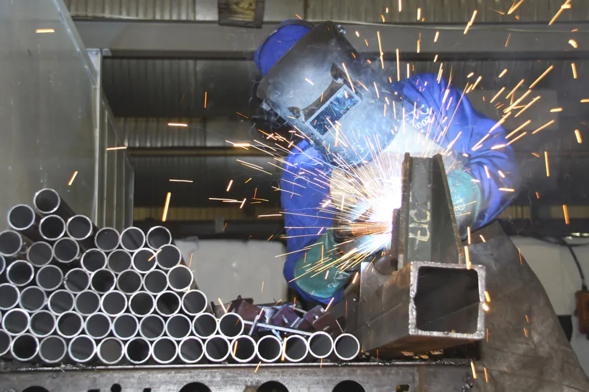
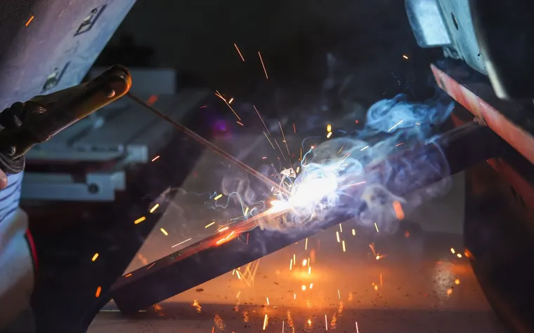
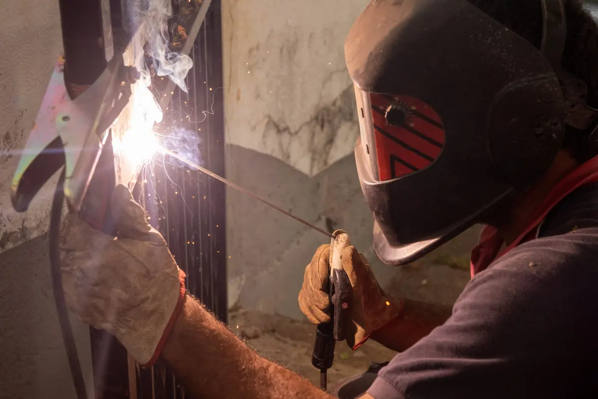
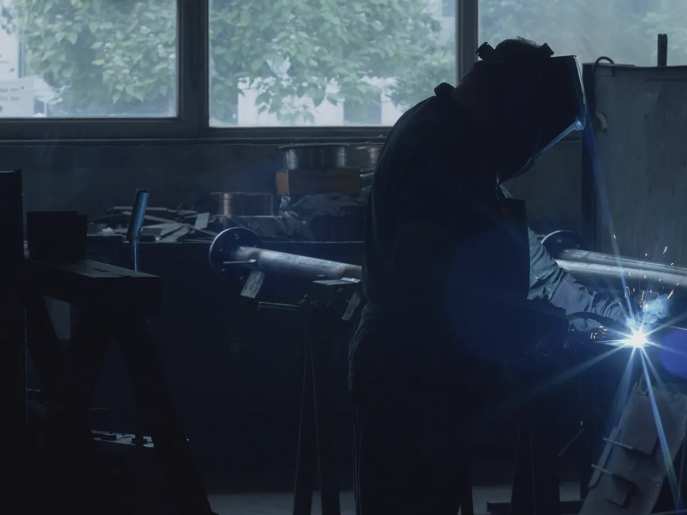
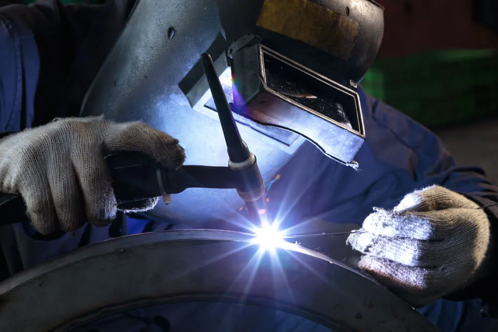
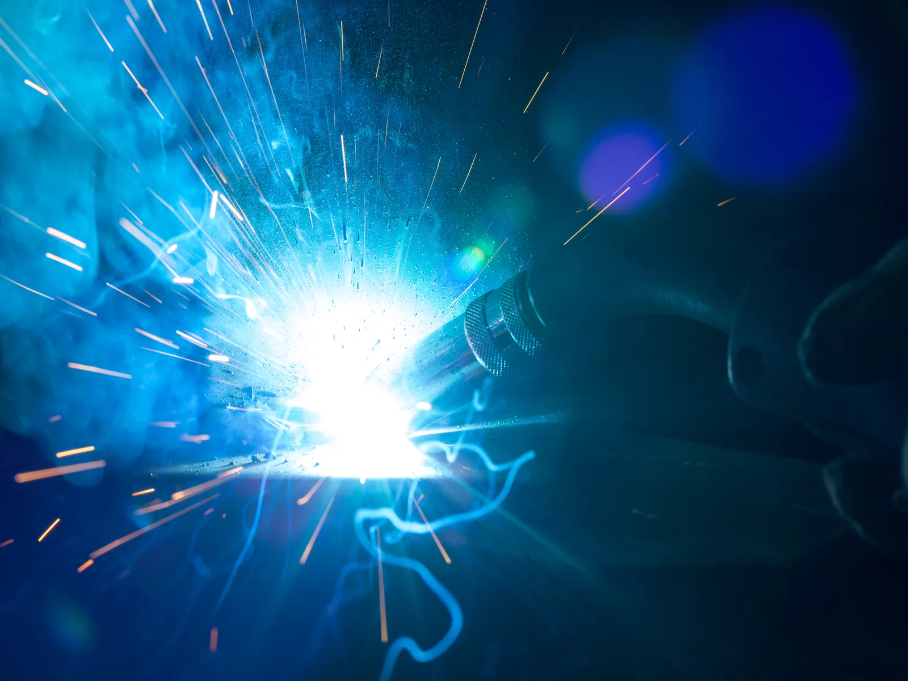
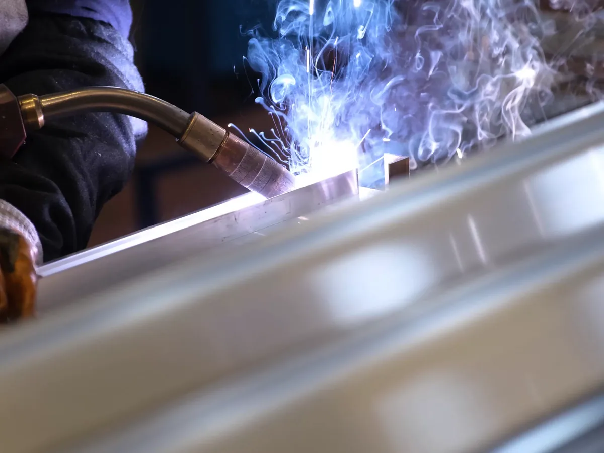
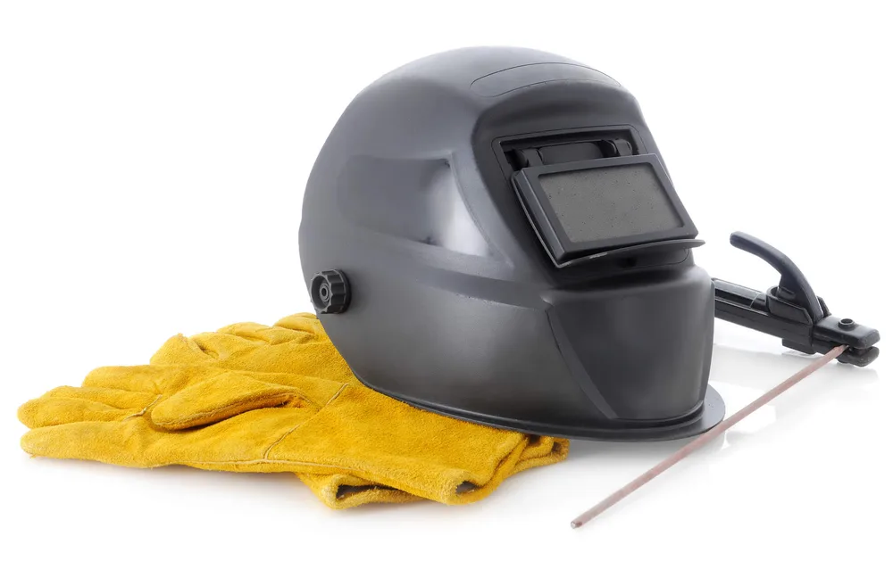

Home · Arc Welding
Arc Welding Service in New Orleans
At Big Easy Mobile Welders, we bring arc welding to residential and commercial customers across New Orleans. Our licensed, insured welders arrive in a fully equipped mobile unit and choose the arc process that suits your metal and your site.

We come to the jobWhat Do You Get When You Book Our Arc Welding Service in New Orleans?
Our arc welding service in New Orleans comes with a free, no-obligation estimate, a process picked for your metal, a licensed and insured welder on site, clean joint prep and straight answers to your questions. We handle residential and commercial jobs, and you approve the price before any work starts.
A Free Estimate
We look at the metal, the joint and how we will reach it, then quote the job with transparent pricing and no hidden fees.
Shielded or Non-Shielded
We choose between a flux-coated stick electrode, a gas-shielded process or a gasless flux-cored wire. The metal, its thickness and the conditions on site decide which one we run.
Homes and Businesses
We weld for homeowners and for commercial customers. The same team handles a single cracked bracket or a larger repair on a business property.
Joint Prep Before the Arc
We clear rust, paint and debris from the joint with brushes and grinders. Clean metal gives the arc something solid to fuse.
Experienced, Insured Welders
Your job goes to a licensed, insured and highly trained welder from a team with more than 20 years of experience.
Answers at Every Stage
Ask us anything before, during or after the weld. We explain what we did and stay available for follow-up support.

What Kinds of Electrodes Does Arc Welding Use in New Orleans?
Arc welding in New Orleans usually uses one of four electrode setups: a flux-coated stick, a solid wire fed with shielding gas, a hollow wire filled with flux, or a tungsten electrode that does not melt. The electrode decides how the weld is protected from the air and which jobs each process suits.
Flux-Coated Stick Electrodes
In shielded metal arc welding, the rod melts into the joint while its coating burns off. The coating gives off a protective gas and leaves slag over the bead, so no gas bottle is needed.
Solid Wire With Shielding Gas
MIG welding feeds a bare wire from a spool while gas from a cylinder flows around the arc. It lays down clean welds quickly, but a breeze can carry the gas away from the joint.
Wire With Flux in the Core
Flux-cored wire carries its flux inside a hollow tube. Self-shielded versions need no gas cylinder at all, while gas-shielded versions add one for heavier work.
A Tungsten Electrode That Stays Solid
TIG and plasma arc welding strike the arc from tungsten, which does not melt into the weld. Any filler metal is added separately, by hand or by a feeder, inside a shield of inert gas.
Why Does Outdoor Arc Welding in New Orleans Call for the Right Process?
Outdoor arc welding in New Orleans calls for the right process because breezes and damp air both affect the weld. Wind can blow shielding gas off a MIG or TIG arc, and moisture can add hydrogen that leads to cracking. Processes that make their own shielding, used on a dry joint, hold up better.

On an open job site, the weather has a say in which arc process will hold up.
A steady breeze can strip shielding gas away from a MIG or TIG arc and leave pores in the weld. Stick electrodes and self-shielded flux-cored wire make their own shielding, so they usually suit outdoor work better.
Damp air is the other concern, since moisture in an electrode coating can raise the hydrogen in a weld and lead to cracking. We keep electrodes and joints dry before we strike an arc, and our guide on how to stop welds from cracking covers the other causes.
Why Bring an Arc Welder to Your Home or Business in New Orleans?
Bringing an arc welder to your property in New Orleans means the metal can be welded where it already stands. Gates, frames and railings fixed to a building stay in place, the portable equipment comes to you, and one team handles both shielded and non-shielded work.

The Metal Stays Where It Is
A frame bolted to a wall or a post set in concrete does not have to come out. We weld it in place, right where it is installed.
Equipment Made to Travel
Stick welding gear is light and portable, which is why it works so well on site. Our mobile unit carries everything the job needs.
One Team for Both Methods
We handle shielded and non-shielded arc welding. If the job calls for a different process partway through, we can switch without sending you elsewhere.
How Do You Book an Arc Welding Job With Us in New Orleans?
You book arc welding in New Orleans by asking us for a free quote, approving it and picking a convenient time. Our welders then prep the joint and weld it on site, and you review the finished work with us. Easy payment options and follow-up support come with every job.
Ask for a Free Quote
Call us or fill in the online estimate form with the metal, the damage and the location.
Pick a Convenient Time
Once the quote is approved, we schedule the visit around your day.
Prep and Weld on Site
Our welders arrive with the rig, clean the joint and run the process the job needs.
Review the Work
We walk you through the finished weld, offer easy payment options and stay available for follow-up.
 The rig comes to you
The rig comes to you
What Affects the Price of Arc Welding in New Orleans?
The price of arc welding in New Orleans depends on the process the job needs, the type and thickness of the metal, how much welding there is and how easy the joint is to reach. We look at the work first and give you a free estimate with transparent pricing and no hidden fees.
The Process Required
Stick work, wire welding and tungsten arc welding use different consumables and move at different speeds.
Metal Type and Thickness
Thicker sections and some alloys need more passes, more filler and more time under the hood.
Amount of Welding
A short tack on a bracket is a smaller job than several feet of seam or a run of joints.
Reach and Setting
A joint at waist height outdoors goes faster than one overhead, in a tight corner or inside a busy business.
What Should You Have Ready Before an Arc Welding Visit in New Orleans?
Before an arc welding visit in New Orleans, know what the metal is and what it does, clear anything flammable from around the work, and make sure we can park near the job. On commercial sites, check whether hot work needs a permit first, since that can affect the schedule.
What the Metal Is and Does
Tell us what the piece is made of if you know, and whether it carries weight. Photos of the damage help us plan the right process.
A Clear, Safe Work Area
Move anything that can burn away from the joint. For businesses, our guide on hot work permits and fire watch for commercial welding explains what may be required.
Room for the Rig
Let us know about gates, pets and parking. The closer the mobile unit can get, the shorter the leads we run to the joint.
What Do Customers Say About Our Arc Welding Team in New Orleans?
Customers describe our welders as reliable, quick to respond and professional from start to finish, with top-notch workmanship at a fair price. That feedback comes from homeowners and business owners who hired us, and it describes the same welders who now handle arc welding on site across the city.
Big Easy Mobile Welders provide quality welding work at a reasonable price. They have been reliable and quick to respond whenever I've needed them, which has made it easy for me as their customer!
The guys from Big Easy Mobile Welders were great! They came to my house and welded two iron railings with a quick turnaround time, which was just what I needed. The quality of workmanship is top notch which made me a satisfied customer! If you need anything welded then these guys will be able to help out big time.
I can't recommend Big Easy Mobile Welders enough! They helped me out of a jam by welding our gate, and their work is amazing. The fast service combined with great quality made all the difference in getting things done quickly without any hassle for me. Thanks again, guys!
If you need a welder for any type of job, I highly recommend Big Easy Mobile Welders. The team did an amazing job on my home and business! They were professional from start to finish. Thankful that their work could help me get back up and running again sooner than expected.
I had the pleasure of working with Big Easy Mobile Welders this past week. They are not only professional and skilled, but also very affordable! I highly recommend them for any welding job you may need done on your property or vehicle. You won't regret using these guys as they do amazing work at a fair price 10/10 would do again!
Which Arc Welding Services Can You Book in New Orleans?
In New Orleans you can book shielded arc welding, which uses stick electrodes, and non-shielded arc welding, which uses flux-cored wire that needs no gas cylinder. We also offer pipe welding, custom welding, metal fabrication and mobile welding across the city, all handled by the same licensed, insured team.

Shielded Arc Welding
Stick welding, where the electrode's flux coating shields the weld with gas and a layer of slag.
View shielded arc welding →
Non-Shielded Arc Welding
Wire-fed arc welding that needs no gas cylinder, for work where gas shielding is not practical.
View non-shielded arc welding →
Pipe Welding
Pipe and pipeline repair on site, with stick and gas-shielded processes matched to the pipe.
View pipe welding →
Custom Welding
Custom ironwork, estimated before we start so we arrive with the right equipment for the job.
View custom welding →
Metal Fabrication
Fabrication of all types of metal for residential, commercial and industrial settings.
View metal fabrication →
Mobile Welding
On-site welding at your home or business, from pipe and fence work to gates, railings and windows.
View mobile welding →
Where Can You Get a Free Arc Welding Estimate in New Orleans?
To get a free arc welding estimate in New Orleans, fill in our online estimate form or call (504) 370-2757. Describe the metal, the damage and where the job is, and we will reply with a no-obligation quote you can review before anything is scheduled.
Loading the estimate form...
If it does not appear, call us at (504) 370-2757.

Which Arc Welding Questions Come Up Most in New Orleans?
New Orleans property owners most often ask us about arc welding basics: the main types, how the machine works, how hard it is, how it compares with MIG, brazing and other methods, what heli arc means and why some processes need flux.
What are the different types of arc welding?
The main types are shielded metal arc (stick), gas metal arc (MIG), flux-cored arc, gas tungsten arc (TIG), plasma arc and submerged arc welding. All of them melt metal with an electric arc. They differ in the electrode and in how the molten weld is protected from the air.
How does an arc welding machine work?
The machine is a power source that sends current through a cable to the electrode and back through a clamp on the workpiece. When the electrode is touched to the metal and pulled back slightly, an arc jumps the gap. Its heat melts the base metal and filler, which cool into a weld.
Is arc welding hard?
Arc welding takes real practice to do well. TIG is usually considered the hardest to learn, and stick is harder than MIG because holding a steady arc without the rod sticking takes skill. Wire processes are easier to start, but a weld that holds under load still depends on prep, settings and technique.
What is easier, MIG or arc welding?
MIG is itself a type of arc welding, but most people asking mean stick welding. MIG is generally considered the easier of the two to learn, since the wire feeds itself and the arc is simple to start. Stick takes more skill, though it copes better with wind and rusty metal.
What is heli arc welding?
Heli arc is an older name for TIG welding, also called gas tungsten arc welding. The name came from the helium gas first used to shield the arc in the early 1940s. Today the process often runs on argon, and welders use it for thin metal, stainless steel and aluminum.
What is the difference between arc welding and brazing?
Arc welding melts the edges of the base metal so the pieces fuse into one. Brazing leaves the base metal solid and heats the joint until a filler metal with a lower melting point flows in and bonds the parts. Capillary action pulls that filler into the tight gap, much like solder in a copper fitting.
What types of welding are there besides arc welding?
Besides arc welding, the main groups are oxyfuel gas welding, which uses a fuel gas flame, and resistance welding, such as spot welding, which joins metal with current and pressure. Others include electron beam and friction welding, which are mostly used in factories rather than on site.
Why is it necessary to use a flux in some arc welding processes but not in others?
Molten metal has to be protected from the air, or it picks up oxygen and nitrogen that weaken the weld. Stick, flux-cored and submerged arc welding get that protection from flux. MIG and TIG get it from a shielding gas fed from a cylinder, so they need no flux.


Book Your Free Mobile Welding Estimate
Tell us what needs welding, and we will bring the rig to your door anywhere in the New Orleans area.